This section contains some further programs which do some important manipulations
in magnetism, ...
- addj file1.j file2.j:
- adds exchange parameters of file2.j to the
parameters in
file1.j - output is written to stdout, if file2.j is not given, a copy of the input file is saved
- Option: -nofcomponents 23
- fixes the nofcomponents to 23 by
reducing (removing entries) or increasing (by filling with zeroes)
the exchange parameter tables
- Option: -ni
- forces output without indexchange
- anisotropy:
- program to calculate the magnetic anistropy
by doing a mcphas or
single ion calculation for different external magnetic field
directions and evaluating the expectation value of the magnetic
moment.
usage: anisotropy -h
anisotropy T H xn yn zn nofsteps [-r sipffilename Hxc1 Hxc2 ... Hxcnofcomponents]
anisotropy T H -p nofthetasteps [-r sipffilename Hxc1 Hxc2 ... Hxcnofcomponents]
-h : this (help) message
T : temperature in Kelvin
H : absolute value of the external magnetic field (T)
xn,yn,zn : direction normal to plane, in which the anisotropy
should be calculated ... e.g. if you want to
calculate the anisotropy in the xy plane, then
enter xn yn zn = 0 0 1
nofsteps : number of steps to be calculated
-p : calculate polycrystal average
nofthetastepssteps : number of theta steps to be calculated for polycrystal average
option:
-r sipffilename: filename of single ion parameter file
Hxc1,Hxc2,... are the exchange field components (meV)
(exchange field is kept constant, external magnetic
field is rotated in the anisotropy calculation)
output files:
./results/anisotropy.out contains anisotropy information
- cfsplit:
- Calculates via group theory, the multiplicity of crystal field split levels
for particular point symmetries. The command is: "cfsplit PTGP J"
where PTGP is the name of the point group (both Hermman-Maguin and
Schoenflies notation are understood), and J is the half-integer value
of the total angular momentum J of the lowest multiplet. E.g. "cfsplit Oh 2" gives the
familiar cubic Eg/T2g splitting (last line of output).
See also: symhmltn which calculates the allowed two-ion exchange terms for a point group.
- cif2mcphas [options] INPUT.CIF:
- Creates a set of McPhase input files (mcphas.j, sipfs) from the crystal structure given in a CIF
(Crystallographic Information File), with or without user interaction. CIF input files may be obtained
from online repositories such as the Inorganic Crystal Structures Database (ICSD), the Crystallography
Online Database (COD) or the American Mineralogist Database (AMCSD), or they may be generated by many
crystal structures programs, including FullProf. In fully automated mode, the program is invoked with
the name of the CIF input file as: "cif2mcphas INPUT.CIF". In this case, the
program tries to guess which crystallographic sites contains magnetic or non-magnetic ions, and what the
valence (oxidation state) of that ion is. This information may also be given by the user in interactive
mode, with the following command: "cif2mcphas INPUT.CIF -i" (e.g. by including
the switch -i (or -interactive) before or after the CIF input filename). The online help
may be access by invoking the program without arguments or with the -h (-help) switch.
Finally, if you do not have a CIF of the structure you want to calculate, you can use the template here:
; Please replace text in square brackets [] with your data
_cell_length_a [a_in_Angstrom]
_cell_length_b [b_in_Angstrom]
_cell_length_c [b_in_Angstrom]
_cell_angle_alpha [alpha_in_degrees]
_cell_angle_beta [beta_in_degrees]
_cell_angle_gamma [gamma_in_degrees]
; The H-M symbol generally needed by cif2mcphas but some spacegroups
; which have only one setting can be identified purely by the number.
; Most orthorhombic or low symmetry spacegroups have multiple centring,
; origin choices or unique axes which will require an H-M symbol.
; If this is the case, and you give just the spacegroup number,
; cif2mcphas may return with an error.
; If you don't use one of these fields, you must comment it out, by
; putting a ";" or "#" at the start of the line.
_symmetry_space_group_name_H-M [Hermann-Maguin_symbol_with_spaces]
_symmetry_Int_Tables_number [SpacegroupNumber]
; At the end of the file, please list the non-equivalent
; sites' fractional coordinates of this structure.
loop_
_atom_site_label
_atom_site_fract_x
_atom_site_fract_y
_atom_site_fract_z
[AtomSite] [x_coord] [y_coord] [z_coord]
replacing instances of e.g. [AtomSite] or [x_coord] with the site name and fraction  -coordinate, etc.
This template can also be generated using the command "cif2mcphas -c" or "cif2mcphas -create".
See also: icsdread which downloads and creates a CIF from an entry of the (free) Korean ICSD mirror.
-coordinate, etc.
This template can also be generated using the command "cif2mcphas -c" or "cif2mcphas -create".
See also: icsdread which downloads and creates a CIF from an entry of the (free) Korean ICSD mirror.
Options:
- -c
-
- - - create
- create cif template
- -i
-
- - - interactive
- no automatic guess of pointcharges, magnetic configurations etc.
- -pc 3.6
- do point charge calculation including charges up to 3.6 Angstroms.
- -sp
- save the .pc files with list of neighbouring ions in results/ (default is to not save these but to use coordinates internally only). If -pc is not specified, this option has no effect.
- -rp
- don't regenerate point charge coordinates but reread them from
the saved .pc files in results/ - this option is intended so that users can
modify the charges in the .pc file (e.g. by the program setvariable)
and regenerate the CF parameters
from the new charges. (You don't have to specify -pc with this option).
- -so
- force all ions to use so1ion
- -ic
- force all ions to use ic1ion
- -ph
- force all ions to use phonon
- -sf
- apply screening function to charges for calculation of crystal field parameters,
e.g. -sf sf.r reads file sf.r, with column 1 r(Å),
column 2 screeningfactor for 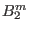, column 3 screeningfactor for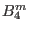, and column 4
screeningfactor for 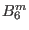.
Default is to create sipf files with so1ion module for f-electrons and ic1ion module for d-electrons
and phonon module for nonmagnetic ions.
The -so and -ic options have no effect unless either -pc
or -rp is specified.
-so takes precedent over -ic (e.g.
when typing cif2mcphas -rp -so -ic file.cif the program will ignore the
-ic and force all ions to use so1ion).
Some examples of the syntax are:
cif2mcphas -pc 3.5 ermno3.cif
cif2mcphas -pc 3.5 -sp ermno3.cif
cif2mcphas -rp ermno3.cif
cif2mcphas -pc 3.5 -so ermno3.cif
cif2mcphas -rp -ic ermno3.cif
- cpsingleion 10 100 1 file.levels.cef [options]:
- By runnning singleion some file.levels.cef is created in folder results.
The cpsingleion program may then be used. It
calculates the specific heat in the temperature
interval 10-100 K with a step width
of 1 K. Alternatively a comparison to experimental data can be made by cpsingleion 1 2
cpexp.dat file.levels.cef,
where the temperatures are given in column 1 and the experimental specific heat in column
2 of file cpexp.dat. The calculated specific heat is compared to the experimental data and
a standard deviation sta is calculated and output is written to stdout.
Other quantities can be calculated using the options: -s (calculate entropy (J/molK) instead
of cp),
-f (calculate free energy (J/mol) instead of cp),-u (calculate magnetic energy (J/mol) instead
of cp),
-z (calculate partition sum instead of cp)
- cpso1ion 10 100 1 [options]:
- same as cpsingleion but for output of program
so1ion (no file.levels.cef required, takes values from so1ion.out) .
- cpic1ion 10 100 1 [options]:
- same as cpsingleion but for output of program
ic1ion (no file.levels.cef required, takes values from ic1ion.out) .
- cpicf1ion 10 100 1 [options]:
- same as cpsingleion but for output of program
icf1ion (no file.levels.cef required, takes values from icf1ion.out) .
- epsdebye Tmax dT Tdebye scale [d1 d2 datafile]:
- calculates the phonon induced strain
 using the debye model
according to the following formula:
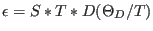
with
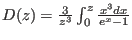
Range is from zero to Tmax in stepwidths dT
unless a datafile is given.
If a datafile is given, with data column d1 and d2,the strain
is calculated for T-values of data column d1 and epsilon
is compared to data in column d2 - a standard
deviation sta is calculated as a sum of squared deviations.
As output the datafile is given, an additional is column added
containing the calculated strain epsilon. The datafile has to
be sorted according to descending T values !!!
output is written to stdout.
using the debye model
according to the following formula:
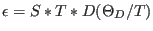
with
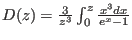
Range is from zero to Tmax in stepwidths dT
unless a datafile is given.
If a datafile is given, with data column d1 and d2,the strain
is calculated for T-values of data column d1 and epsilon
is compared to data in column d2 - a standard
deviation sta is calculated as a sum of squared deviations.
As output the datafile is given, an additional is column added
containing the calculated strain epsilon. The datafile has to
be sorted according to descending T values !!!
output is written to stdout.
- extendunitcell n1 n2 n3
- program to extend crystallographic
unit cell n
times in r1 (or r2,r3) direction, meaning take mcphas.j, mcphas.tst
and mcdiff.in and generate an extended description of the unit
cell
n1xr1,n2xr2,n3xr3 put result into extend.j, extend.tst and extend.in
- fermicol col T filename
- calculates the Fermifunction from energy in column col.
- col
- column containing energy values (eV) relative to EF
- T
- temperature (K)
- filename
- file name
- fitfermi T EF fwhm min max filename
- fits a (Gaussian convoluted) Fermi function to data in file
- T
- Temperature (K)
- EF
- initial value of Fermi Energy (eV)
- fwhm
- initial vlaue for resolution (eV) (if less than zero the fwhm is not fitted and set to |fwhm|)
- min max
- energy range of fit (may be less than range of experimental data points)
- filename
- filename (col 1 is energy in eV and col 2 intensity)
The fermifunction is defined as
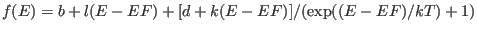, the function
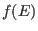 is convoluted with a Gaussian function of given fwhm
and the result is compared to experimental data.
output: files can be found in directory results, filename.fit is created with fitted function and parameter values
- formfactor *.sipf
- program to calculate the neutron magnetic formfactor
from the formfactor coefficients in the single ion parameter file *.sipf. If a radial wave function is given in *.sipf
then the formfactorand the expectation values of the spherical Bessel functions are evaluated by integration
with this radial wave function (see appendix J).
- icsdread ICSD_ID
 INPUT.CIF
INPUT.CIF
- Program to create a CIF (Crystallographic Information File) from the contents of a webpage on the (free)
Korean Inorganic Crystal Structures Database (ICSD) mirror (http://icsd.kisti.re.kr/) which is automatically
downloaded when the corresponding ICSD ID is given as input. This requires an internet connection. If the
webpage corresponding to this ICSD entry was previously downloaded, the filename can be given as input instead
and the program will read from this file. Output is sent to the console so should be redirected into a file
using the operator for futher use, for example to set up McPhase input files using cif2mcphas
- jjj2j:
- transforms file of mcphas.jjj format to
mcphas.j format
- output is written to stdout
- makenn 23.3:
- Program to calculate neighbors of atoms given a crystal structure.
Note that in order to use makenn you have to set up a
working mcphas.j file with the crystal structure.
The program makenn takes mcphas.j and
creates all neighbours within a sphere of distance 23.3Å, for every neighbour the classical
dipole interaction is calculated and is stored in file makenn.j. If the exchange
parameters
(and neighbour positions) are not known for your system, you can use this module
to generate a list of nearest neighbours and exchange parameters. Currently implemented
are not only dipolar interactions, but also exchange interactions via the Bethe-Slater
curve or the RKKY model.
- option -rkky A(meV) kf(1/A)
- calculates the rkky interaction according to
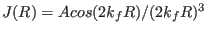
- option -rkky3d A(meV) ka(1/A) kb(1/A) kc(1/A)
- calculates the rkky interaction
according to
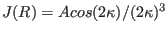 with
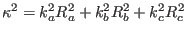
- option -rkkz A(meV) kf(1/A)
- calculates the rkky interaction according to
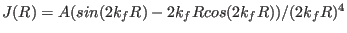
- option -rkkz3d A(meV) ka(1/A) kb(1/A) kc(1/A)
- calculates the rkky interaction
according to
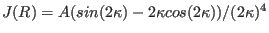 with
- option -kaneyoshi A(meV) D(A) alpha
- calculates the Kaneyoshi parametrisation for
the Bethe-Slater
curve:
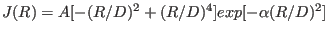 with
corresponding
to the orbital radius
- option -kaneyoshi3d A(meV) Da(A) Db(A) Dc(A) alpha
- calculates the Kaneyoshi
parametrisation for the Bethe-Slater
curve:
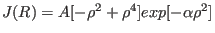 with
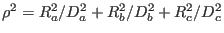
- option option -bvk filename
- for phonon take Born van Karman model with longitudinal and
transversal spring constants from file - file format:
# atom_i_sipf atom_j_sipf bondlength(A) long(N/m) trans(N/m)
Ce1.sipf Ce1.sipf +4.0 200.9 100.0
Ce1.sipf Ce1.sipf +4.7 70.9 0.0
mind: into MODPAR2-6 in *.sipf the Einstein-oscillator parameters
are written, too
Longitudinal/Transversal springs are described by 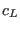/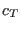, respectively and
the energy is given by
 |
 |
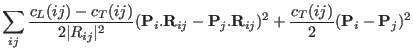 |
(130) |
Figure 24:
Illustration of the transversal and longitudinal BvK springs
| 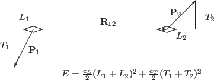 |
- option option -cfph [screeningfile.r]
- calculate crystal field phonon interaction: mcphas.j lists
magnetic and non magnetic atoms with charges defined in the
sipf files by CHARGE= variable. For magnetic atoms the sipf
file the variable MAGNETIC=1 has to be set and information
about the ion has to be present (IONTYPE etc.).
For each magnetic ion a new site is created and shifted
0.1 Å along
 in order to not overlap with the original site.
It is assumed, that the original site will be using an sipf
file with the MODULE=phonon as well as all the other
non magnetic sites. For the new magnetic site the program
pointc is used by makenn with option -d to calculate derivatives
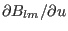 which are inserted as interaction
parameters between MODULE=phonon and MODULE=so1ion sites.
In order to use the resulting file resultsmakenn.j a phonon
model has to be set up, the original magnetic atom sites
sipffilename has to be changed to the phonon model filename
and the phonon model has to be added to makenn.j, e.g. by
program addj, moreover magnetic sites sipf files are required,
e.g. such as created in results/makenn.a*.sipf.
A screening file can be used to define distance dependent
screening of charges for the pointcharge model calculation
format: col1 distance r (Å), col 2 screening factor
for , col 3 for and col 4 for
in order to not overlap with the original site.
It is assumed, that the original site will be using an sipf
file with the MODULE=phonon as well as all the other
non magnetic sites. For the new magnetic site the program
pointc is used by makenn with option -d to calculate derivatives
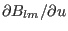 which are inserted as interaction
parameters between MODULE=phonon and MODULE=so1ion sites.
In order to use the resulting file resultsmakenn.j a phonon
model has to be set up, the original magnetic atom sites
sipffilename has to be changed to the phonon model filename
and the phonon model has to be added to makenn.j, e.g. by
program addj, moreover magnetic sites sipf files are required,
e.g. such as created in results/makenn.a*.sipf.
A screening file can be used to define distance dependent
screening of charges for the pointcharge model calculation
format: col1 distance r (Å), col 2 screening factor
for , col 3 for and col 4 for
- option option -f [filename]
-
- option option -dm [filename]
- read interaction constants from table in file.
Use -f for isotropic interactions between momentum 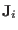 and 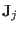
at positions
 and
and 
| 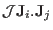 |
|
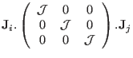 |
(131) |
and -dm for Dzyaloshinski Moriya interactions:
| 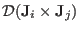 |
|
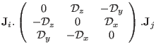 |
(132) |
To get an sample file use option -f or -dm without a filename.
- option -d
- puts to the last column the distance of the neighbours (A)
The neigbours of each atom are also stored in seperate files
results/makenn.a*.pc, which can be used with the program pointc to evaluate
the pointcharge model and calculate crystal field paramaters.
- mcphas2jvx mcphas.j
- Creates a JavaView input file (by default results/mcphas.jvx) which shows the atomic positions
and exchange interactions in 3D graphics. It requires a mcphas.j type file as input. JavaView can
then be used to view the output in 3D using: javaview results/mcphas.jvx. A specific output file
may be given using the -o (-output) switch, and for the cluster module the switch -i
(-individual) can be used to plot individual atoms within a cluster and the intra-cluster exchange
interactions. For example, to create the a non-default file with atomic positions of a cluster calculation
for viewing with JavaView, mcphas2jvx mcphas.j -i -o results/cluster.jvx && javaview results/cluster.jvx
where the double ampersand means to execute the second (javaview) command if the first is successful.
Figure 25:
Example of output of mcphas2jvx+JavaView for a normal setup (left, Bi FeO with Fe-Fe exchange interactions shown as
lines) and for a cluster setup (right, trimers in LuMnO shown as triangles with blue square block indicating trimer centre; intra-trimer
exchange shown as purple lines, inter-cluster exchange as black lines). Linewidths are proportional to the strength of the exchange
interactions between the linked atoms or clusters.
FeO with Fe-Fe exchange interactions shown as
lines) and for a cluster setup (right, trimers in LuMnO shown as triangles with blue square block indicating trimer centre; intra-trimer
exchange shown as purple lines, inter-cluster exchange as black lines). Linewidths are proportional to the strength of the exchange
interactions between the linked atoms or clusters.
|
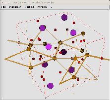
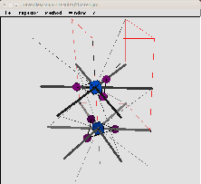
|
- pointc Ce3+ 0.2 4 1 5.3
- calculates Crystal field Parameters from Point Charges
... meaning calculate Stevens Parameters Blms
and Wybourne Parameters Llms
for one point charge of +0.2
 in distance
x=4 Åy=1 Åz=5.3 Åfrom a Ce
in distance
x=4 Åy=1 Åz=5.3 Åfrom a Ce ion.
Alternative Usage: pointc Ce3+ filename
... meaning read several charges+coordinates from file,
file format: column 1=charge, column 2-4 = x y z coordinate (note,
(makenn creates useful files for this option from the crystal
structure).
results are written to stdout (including radial matrix elements and Stevens
factors)
Moreover, if started as
pointc Ce3+ C2.pos 5 6
... the reduced charge model is used,i.e. B2m is calculated with
charges in col 1 of C2.pos,B4m and B6m with charges in col 5 and 6, respectively. Similar,
pointc Ce3+ 0.2 4 1 5.3 0.1 0.3
... will use 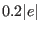 for ,
ion.
Alternative Usage: pointc Ce3+ filename
... meaning read several charges+coordinates from file,
file format: column 1=charge, column 2-4 = x y z coordinate (note,
(makenn creates useful files for this option from the crystal
structure).
results are written to stdout (including radial matrix elements and Stevens
factors)
Moreover, if started as
pointc Ce3+ C2.pos 5 6
... the reduced charge model is used,i.e. B2m is calculated with
charges in col 1 of C2.pos,B4m and B6m with charges in col 5 and 6, respectively. Similar,
pointc Ce3+ 0.2 4 1 5.3 0.1 0.3
... will use 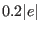 for ,  for , 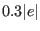 for .
for , 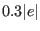 for .
Note: if an ion is not implemented, it's parameters can be
entered in a single ion property file and pointc is
started as
pointc file.sipf 0.2 4 1 5.3
The single ion property file must then contain the following
information (# denotes comments):
#the name of the ion
IONTYPE=Ce3+
#stevens parameters (optional, necessary for output of Blm)
ALPHA=-0.0571429
BETA=0.00634921
GAMMA=0
# the radial matrix elements RN=<r^N> in units of a0^N (a0=0.5292 A)
R2=1.309
R4=3.964
R6=23.31
# alternatively the radial wave function can be given:
# radial wave function parameters R_Np,XIp(r)= r^(Np-1) . exp(-xi r) . (2 XIp)^(Np+0.5) / %%@
sqrt(2Np!)
# values tabulated in clementi & roetti Atomic data and nuclear data tables 14 (1974) %%@
177-478
# Co2+ is isoelectronic to Fe+, looking at page 422 of Clemente & Roetti
# the 3D radial wave function is expanded as R(r)=sum_p C_p R_Np,XIp(r)
N1=3 XI1=4.95296 C1=0.36301
N2=3 XI2=12.2963 C2=0.02707
N3=3 XI3=7.03565 C3=0.14777
N4=3 XI4=2.74850 C4=0.49771
N5=3 XI5=1.69027 C5=0.11388
# if the above parameters are given the radial wave function is output to file %%@
radwavfun.dat
- powdercell2j file:
- used to create mcphas.j type file from
output of powdercell,output is written to mcphas.j. Example of input file:
No name crystal coordinates cartesian coordinates
x y z x y z
------------------------------------------------------------------
1 Sr1 0.3644 0.0000 0.2500 1.0962 -4.1497 -2.7991
...
- radwavfunc file.sipf:
- program to evaluate the radial wave function
given by th parametrisation in file.sipf.
- reduce_unitcell mcphas.j:
- This program checks every atom in the unit cell in file mcphas.j and removes
any atom, which is connected to another by a lattice vector. Useful for
going from a description in an extended unit cell to the primitive unit cell.
- Option: -nofcomponents 23
- fixes the nofcomponents to 23 by
reducing (removing entries) or increasing (by filling with zeroes)
the exchange parameter tables
- Option: -ni
- forces output without indexchange
- rotateBlm
Rotates a set of crystal field parameters for Stevens equivalent
operators by an azimuthal angle fi about the original z axis and
a polar angle theta about the new y axis. A right hand axis system is assumed
and a positive rotation is one which advances a right-hand screw in a
positive direction along the axis.
The calculations are done by means of matrix multiplication based on
the method of Buckmaster (phys. stat. sol. a, vol 13, pp 9, 1972) and
Rudowicz (J. Phys: Solid State Phys., vol 18, pp 1415, 1985).
usage: $0 [-h] [--help]
[-i input_file] [--input input_file]
[-o output_file] [--output output_file]
[-v] [--verbose] [-th theta] [-fi fi] [CF parameters]
-h : this (help) message
-i in_file : input CF parameters file in cfield or mcphase formats
-o out_file : output CF parameters file in mcphase format
-v : verbose mode. Will print out input parameters as read.
-th : polar angle theta in degrees
-fi : azimuthal angle fi in degrees
if -i is omitted, the program will assume the input CF parameters are
given on the command line in the format: Bkq=x.xx,Bkq=x.xx, etc.
e.g. $0 B20=0.21,B40=0.0005,B60=0.051,B66=0.626
negative q parameters such as B_2^{-2}, are specified as: B22S, with
an 'S' at the end, as per the McPhase convention.
you may also specify the ion type by a dding another parameter after
the CF parameters: e.g. $0 B20=0.21,B40=0.5 Pr3+
if -o is omitted, the program prints the parameters to standard output.
- setup_jqfit[-h] [-help] h k l:
- program to setup a fit of exchange parameters in order to reproduce an experimental propagation vector.
-h : print help message
hkl : Miller indices of propagation vector
required input files:
mcphas.j (+ single ion paramter files)
: structural information including all magnetic atoms
output files:
mcdisp.par : contains propagation vector and list of other hkl to
be probed
mcdisp.mf : required input file for mcdisp
calcsta : required input file for simannfit and searchspace
calcsta.pl.forfit: file with fitparameters for Bethe slater, RKKY fits
fit.bat : batch to start the fit
After running this program you can start immediately a fit of exchange
parameters. Edit calcsta.pl.forfit and fit.bat to fine tune the fit
according to your needs.
During fitting a value of sta 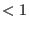 indicates, that the maximum of 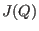 is
at the propagation vector tau. How much it is below one depends on the
magnitude of for the competing wavevectors in the list inmcdisp.par.
- setup_mcdiff_in T Ha Hb Hc:
-
- setup_mcdiff_in x y:
- program
to setup mcdiff.in with information on spinconfiguration
to be used by program mcdiff. Note, you must
have done a mcphas calculation to stabilise
a magnetic structure at the desired Temperature/Field.
setup_mcdiff_in reads the results of this calculation
from results/mcphas.mf and generates an input file
mcdiff.in
-h : help message
T : Temperature (K)
Ha,Hb,Hc : Magnetic Field (T)
x,y : x,y values in phasediagram
required input files:
results/mcphas.sps
: result of a mcphas calculation
output files:
mcdiff.in : required input file for mcdiff
- after running this program you can start mcdiff to do the calculation
magnetic diffraction pattern
- setup_mcdisp_mf T Ha Hb Hc:
-
- setup_mcdisp_mf x y:
-
program to setupmcdisp.mf with information on meanfields
to be used by program mcdisp. Note, you must
have done a mcphas calculation to stabilise
a magnetic structure at the desired Temperature/Field.
setup_mcdisp_mf reads the results of this calculation
from results/mcphas.mf and puts the meanfields into
mcdisp.mf.
-h : this (help) message
T : Temperature (K)
Ha,Hb,Hc : Magnetic Field (T)
x,y : x,y values in phasediagram
required input files:
results/mcphas.mf
: result of a mcphas calculation
output files:
mcdisp.mf : required input file for mcdisp
- after running this program you can start mcdisp to do the calculation
of dispersion of excitations or diffuse scattering
- setup_mcphasjforfit [-h]:
- program to setup a fit of exchange parameters by creating mcphas.j.forfit from mcphas.j
-h : print help message
required input files:
mcphas.j (+ single ion parameter files)
: structural information including all magnetic atoms
output files:
mcphas.j.forfit : all interaction parameters are substituted
with parJxxx[0.0,-1e0,1e0,0,1e-6]
- after running this program you must setup a file calcsta
to calculate the standard deviation and then you can start
a fit by simannfit or searchspace
- singleion [option] T[K] Hexta[T] Hextb[T] Hextc[T] Hxc1 Hxc2 Hxc3 ... Hxcnofcomponents
- single ion - display single ion expectations values 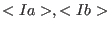... and transition energies.
Hext ..... external field in Tesla
Hxc... exchange (molecular) field in meV
singleion reads mcphas.j and the singleion parameter files quoted therein
and calculatesenergies, eigenstates, expectation values 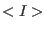 for the given
temperature, external magnetic field Hext and exchange field Hxc (the
interaction constants given in mcphas.j are ignored).
for each single ion property file the following files are generated:
results/file.sipf.levels.cef .. energy levels and eigenstates and <I>
results/file.sipf.trs ......... transition energies,matrix elements
and (powder) neutron intensities
results/_file.sipf ......... parameters as read by singleion
options: -nt ......... by default only 5 transition energies are output,
if you want more, start e.g. with
option -nt 7 to output 7 transition energies
-pinit 0.1 .. consider only transitions with population of initial state > 0.1
-ninit 3 ... consider only transitions from the 3 lowest eigenstates
-maxE 30 ... consider only transitions with energy lower than 30 meV
-r ion.sipf . do not read mcphas-j but only the single ion
parameter file ion.sipf
-M ......... calculate expectation values and transition matrix
elements for magnetic moment M instead of I
-S ......... calculate expectation values and transition matrix
elements for spin S
-L ......... calculate expectation values and transition matrix
elements for orbital momentum L
note: for calculating T or H dependencies you can put single ion in a loop
and pipe the result into a file
.... linux: for B in $(seq 0 0.1 14); do singleion 2 $B 0 0 0 0 0; done > results/fielddep.dat
.... windows command line: for /L %B in (0,1,14) do singleion 2 %B 0 0 0 0 0 >> results\fielddep.dat
.... windows batch file (needed for noninteger numbers):
@echo off && setlocal ENABLEDELAYEDEXPANSION
for /L %%I in (0,2,140) do ( set /A W=%%I/10 && set /A "f = %%I %% 10"
set B=!w!.!f!
@echo on && singleion 2 0 0 !B! 0 0 0 && @echo off )
endlocal && @echo on
... LOOP linux using perl:
perl -e 'for($T=1;$T<90;$T+=2){system("singleion ".$T." 1 0 0 0 0 0");}' > results/sus1Tesla.clc
... LOOP for windows using perl:
perl -e "for($T=1;$T<90;$T+=2){system('singleion '.$T.' 1 0 0 0 0 0');}" > results\sus1Tesla.clc'
- symhmltn:
- Calculates via group theory, the allowed two-ion multipolar exchange terms
between two ions whose center has some particular point symmetry. Syntax is:
"symhmltn PTGP l" where PTGP is
the name of the point group (both Hermman-Maguin and Schoenflies notation are understood), and
l is the integer multipolar order (l=1 for dipolar exchange, l=2 for
quadrupolar, etc.).
E.g. "symhmltn Oh 1" gives the familiar Heisenberg exchange terms.
See also: cfsplit which calculates the multiplicities of the crystal field split levels of a
particular point group.